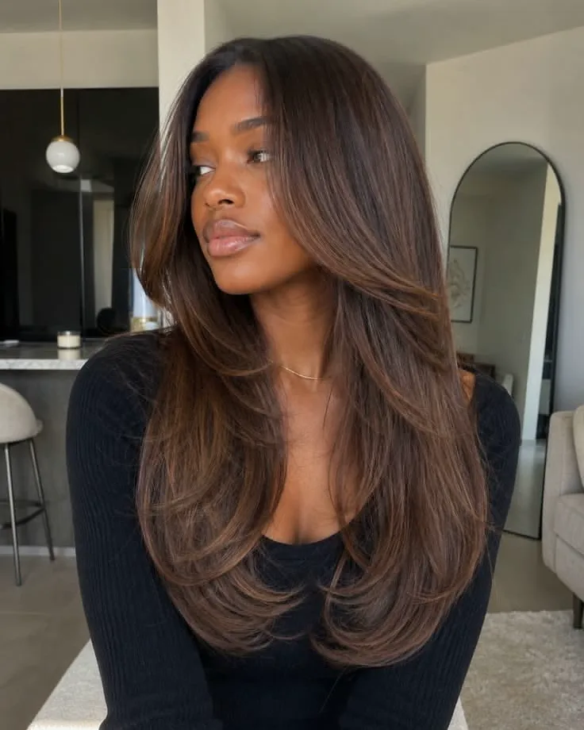
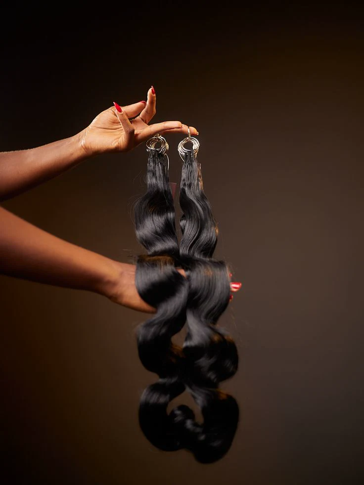

Pose de mèches
Du volume et de la longueur, posés pour tenir et bouger naturellement.
Prix sur devis
Salon de coiffure · sur rendez-vous
Mèches, lissage, reflets, coiffage. Une coiffure qui te ressemble, posée avec le temps qu'il faut.
Nos services
Cinq prestations, faites au salon avec le temps qu'il faut.
Du volume et de la longueur, posés pour tenir et bouger naturellement.
Prix sur devis

Des longueurs lisses et brillantes, qui gardent leur mouvement.
Prix sur devis

Une couleur choisie avec toi, des reflets posés à la main.
Prix sur devis
Des boucles bien dessinées, pleines de volume et de rebond.
Prix sur devis
Des tresses nettes et régulières, de la plus simple à la plus travaillée.
Prix sur devis
Envoie-nous une photo de ce qui te plaît sur Instagram : on te répond avec le prix et un créneau.
Écrire sur InstagramAu salon
Ton rendez-vous, c'est ton moment : on prend le temps de bien faire, du shampoing au dernier coup de brosse.
Les boucles, la brillance, le sourire : le résultat, tu le découvres d'un coup.
Avant tout
Ce que tu aimes, ce que tu veux changer, ce que tes cheveux supportent. On note tout, puis on se lance.
Une ligne nette, des reflets posés à la main, du mouvement jusqu'aux pointes.

Au salon
Rendez-vous
Les rendez-vous se prennent sur Instagram. On te répond pour fixer le créneau qui te convient.
Le plus simple : écris-nous en message privé sur Instagram, avec la prestation qui t'intéresse et tes disponibilités.
Écrire sur Instagram@salon_de_coiffure_nitsy